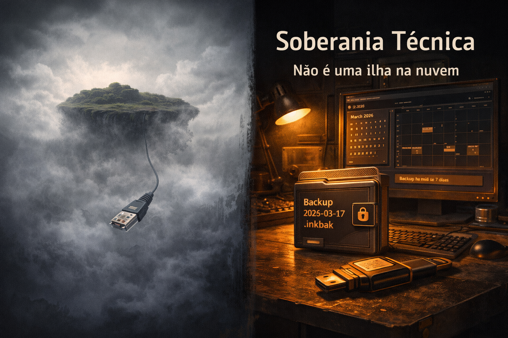

Soberania Técnica: Por que o seu estúdio não é uma ilha na nuvem
Introdução: Dados que não são seus
Quando a agenda, o histórico de clientes e o controle financeiro do estúdio vivem apenas em um servidor de terceiros, você não tem um sistema. Tem um aluguel. A conexão cai, a assinatura vence ou o provedor muda as regras e o seu dia a dia para. Soberania técnica é o contrário: os dados ficam no seu controle, com backup que você guarda e restaura quando precisar.
Este texto é para o tatuador e para o dono de estúdio que quer entender por que segurança de dados não é assunto só de grande empresa. É assunto de quem não pode perder anos de agenda e de histórico porque um serviço sumiu ou mudou de preço.
1. Por que a nuvem sozinha é risco
Serviços em nuvem são úteis para sincronizar, acessar de vários dispositivos e ter redundância. O problema começa quando tudo que você tem está só lá. Sem cópia local, você depende de:
- Conectividade: sem internet, não há agenda, não há histórico. Em horário de pico ou em região com rede instável, o estúdio trava.
- PolÃtica do provedor: mudança de plano, descontinuação do produto ou alteração de preço podem obrigar migração de emergência ou perda de acesso.
- Recuperação: se a conta for bloqueada ou o serviço sair do ar, quem devolve os dados? Em muitos casos, o contrato não garante exportação em formato utilizável.
Não se trata de ser contra a nuvem. Trata-se de não colocar o núcleo do negócio na mão de um único ponto de falha. O estúdio que tem os dados principais no próprio equipamento e um dossiê de backup (um arquivo com data no nome, guardado em pendrive ou em outro disco) pode restaurar e seguir. Quem depende só de login em serviço remoto não tem esse controle.
2. O que é soberania técnica na prática
Soberania técnica, no contexto do estúdio, se traduz em três coisas:
- Dados principais no seu computador: o banco de dados (agenda, clientes, financeiro) fica em disco local. O aplicativo funciona offline. A internet vira opção, não obrigação para o núcleo do negócio.
- Dossiê de backup: um arquivo único, com data no nome, que contém cópia compactada e Ãntegra dos dados. Você gera, guarda onde quiser (pendrive, outro PC, nuvem sua) e restaura quando precisar. O sistema valida a origem e a integridade antes de aplicar.
- Restauração sem depender de terceiro: não é preciso pedir exportação a nenhum provedor. Você usa o dossiê que guardou. O dono do estúdio é o dono da continuidade.
Quem desenha software com essa filosofia não entrega "mais um app de agenda". Entrega um ativo operacional: o estúdio sabe onde estão os dados e como recuperá-los. Isso é segurança de dados no nÃvel que o negócio merece.
3. Backup não é "exportar PDF"
Muitos sistemas oferecem "exportar" em formato que serve para leitura, não para voltar ao estado anterior. Um PDF da agenda ou um CSV de clientes não restaura o sistema. O dossiê operacional é pensado para isso: um único arquivo que, em caso de troca de máquina, falha de disco ou migração, devolve agenda, cadastros e histórico ao estado do momento do backup. Sem depender de suporte técnico nem de servidor remoto.
O aviso "Backup há mais de X dias" no arranque do sistema não é enfeite. É lembrete técnico. O dono do negócio que mantém o hábito de gerar e guardar o dossiê periodicamente não fica refém de acidente nem de decisão alheia.
Conclusão: Controle é ativo
O seu estúdio não é uma ilha na nuvem. É um negócio que precisa de previsibilidade. Soberania técnica não é resistência à tecnologia; é escolher onde os dados vivem e como você os recupera. Dados no seu controle e dossiê na sua mão são a base. O resto é decisão consciente, não dependência por padrão.
Hashtags
Contato
- E-mail: suporte@caracore.com.br
- Site: www.caracore.com.br
- LinkedIn: Cara Core Informática
Acompanhe no LinkedIn: engenharia para o Brasil real.
Seguir no LinkedIn
Artigo publicado em 3 de março de 2026
© 2026 Cara Core Informática. Todos os direitos reservados.